🏆 Overall Rankings
📊 Per-Task Scores
| Task | Opus 5.5 | Sonnet 5.5 | Fable 5.1 |
|---|---|---|---|
| a1-a12-100ul | 1.000 | 0.917 | 0.833 |
| split-200ul-two-wells | 1.000 | 1.000 | 0.917 |
| ampure-bead-cleanup | 0.944 | 0.889 | 1.000 |
| colony-pcr-screening | 1.000 | 0.875 | 0.875 |
| ecoli-heat-shock-transformation | 0.714 | 0.857 | 0.714 |
| golden-gate-assembly | 1.000 | 1.000 | 1.000 |
| opentrons-rna-extraction | 0.889 | 0.833 | 0.833 |
| Mean (pass@1) | 0.935 | 0.910 | 0.882 |
| Agent cost (USD) | $1.25 | $0.41 | $3.69 |
No trial failed a deterministic or critical check. All 21 protocols simulated and passed every end-state check — every point lost came from the LLM judge (claude-sonnet-5-5).
Common judge deductions: mixing competent cells with no operator pause (heat-shock); reusing a master-mix tip across colonies (colony PCR); recovering 100 µL instead of ~80 µL (RNA extraction); aspiration heights near beads (AMPure). With pass@1 and an LLM judge, differences of ~0.1 between models are within noise.
🔬 3D Protocol Renders — Key Tasks
Robot motion rendered from the simulated Opentrons OT-2 run log. Toggle between the frame strip (key moments) and the animated GIF.
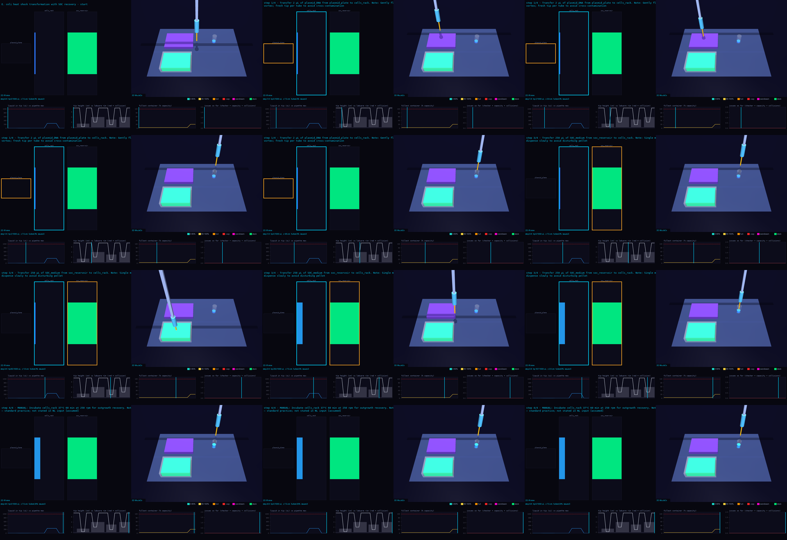
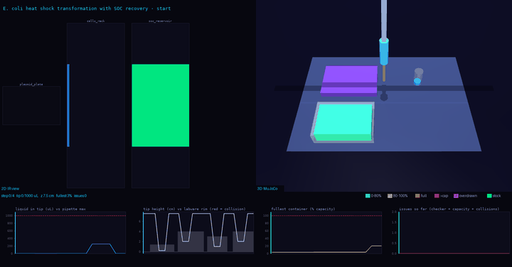
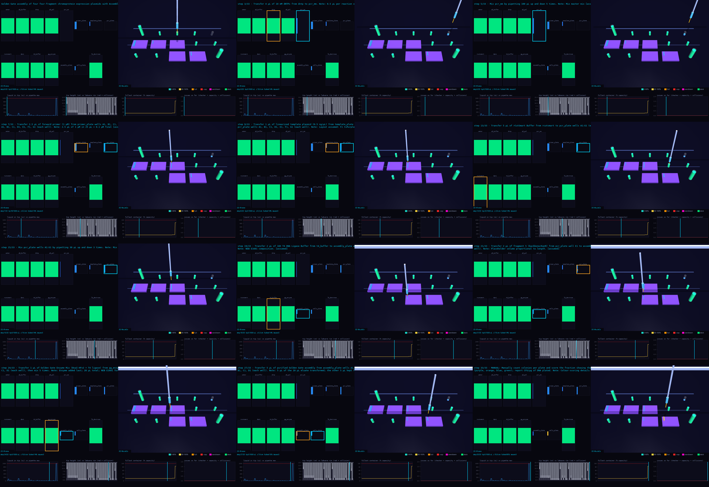
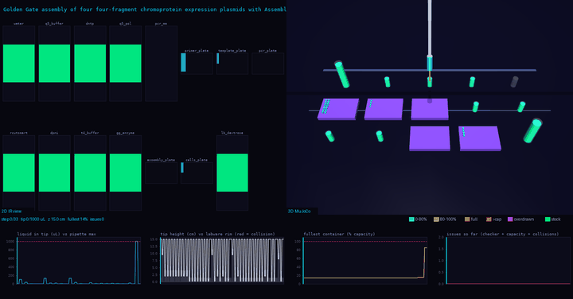
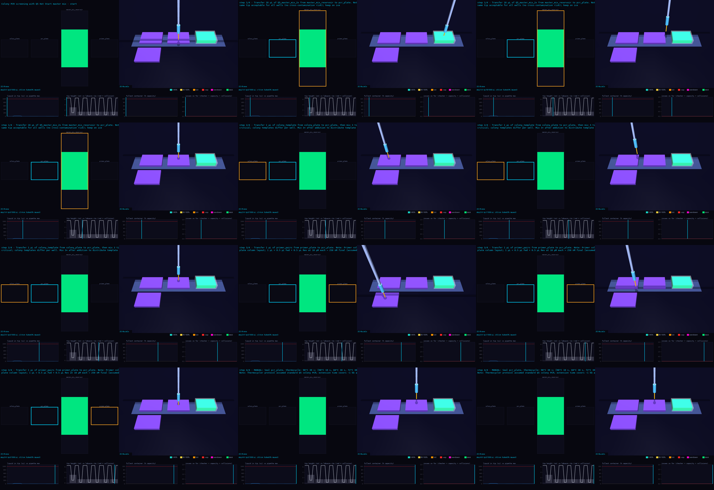
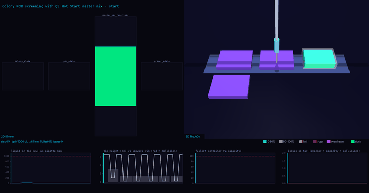
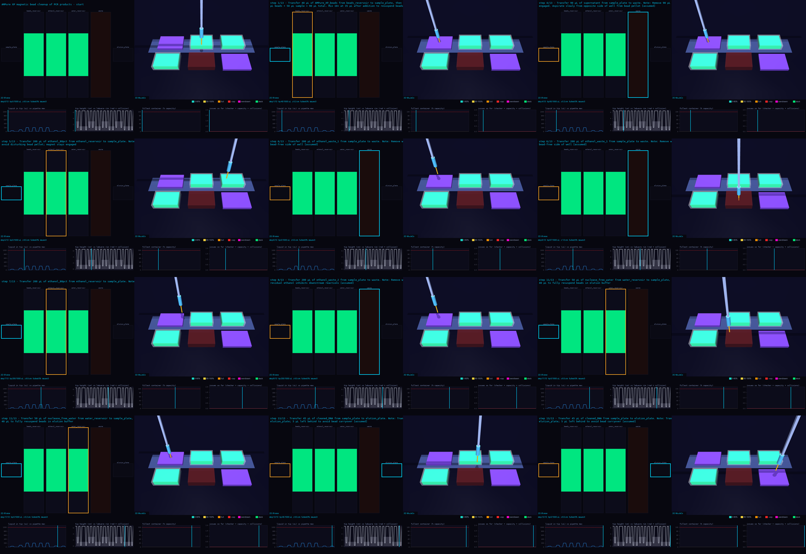
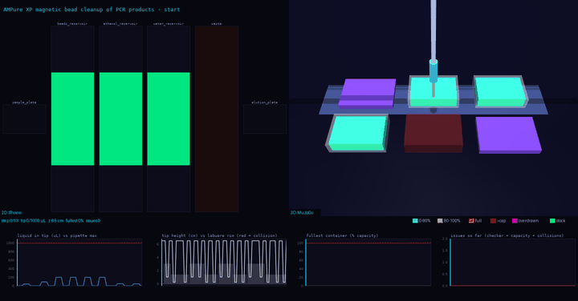
🎞 All Tasks — 2D Animated Protocols
Top-down 2D view of the OT-2 deck for all seven benchmark tasks.
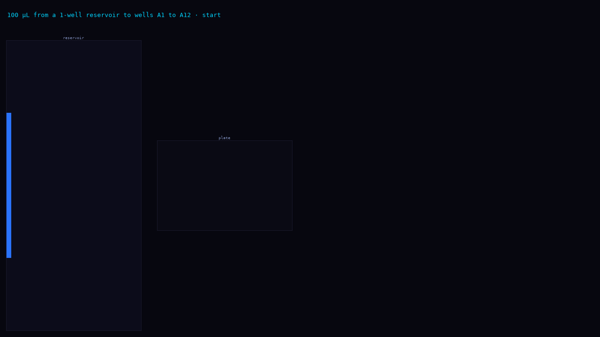
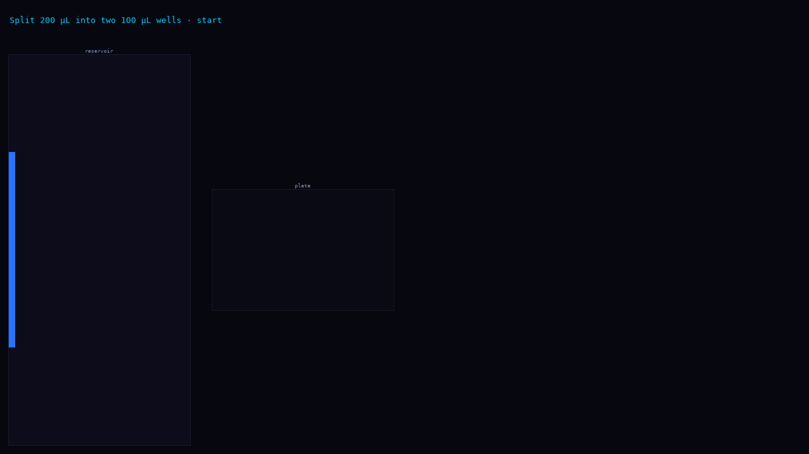
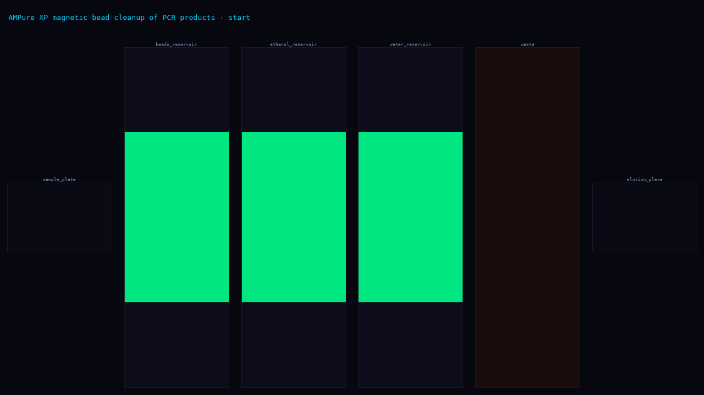
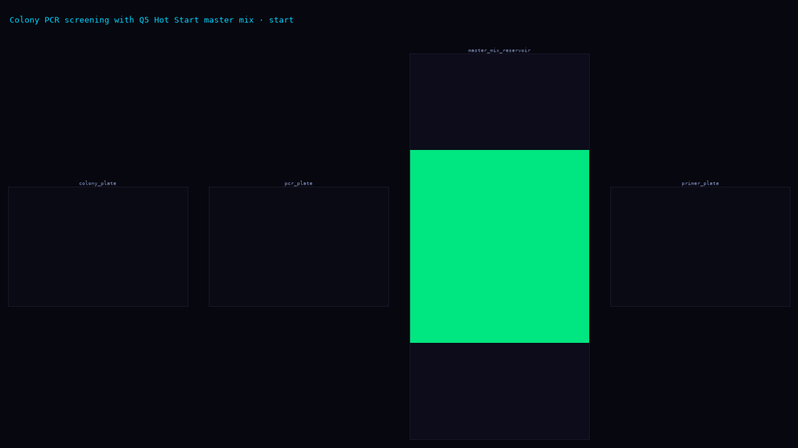
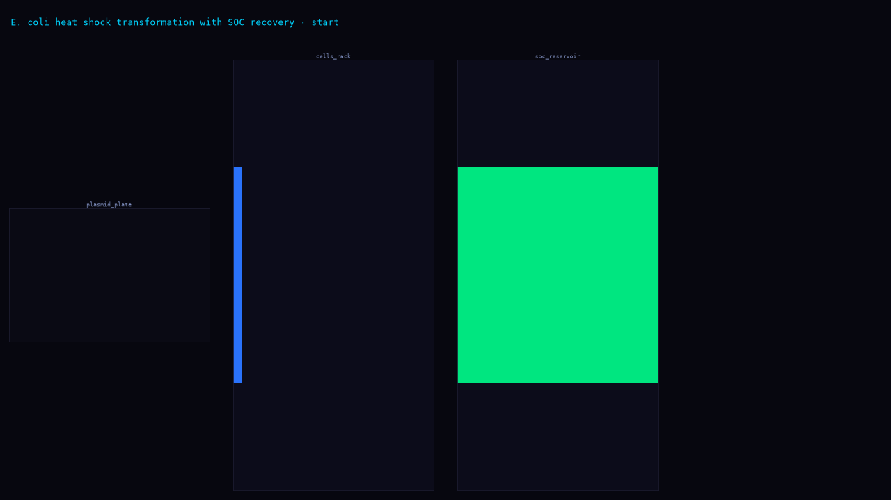
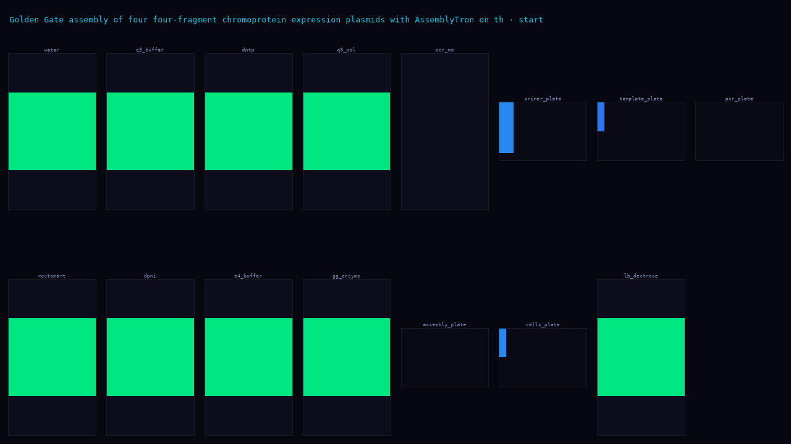
⚙️ How Grading Works
| Task | Grader | Critical cap |
|---|---|---|
| a1-a12-100ul | Simulator + end-state checks + LLM judge | 0.3 if labware / end-state / safety check fails |
| split-200ul-two-wells | Simulator + end-state checks + LLM judge | 0.3 if labware / end-state / safety check fails |
| ampure-bead-cleanup | Simulator + end-state checks + LLM judge | 0.3 if labware / end-state / safety check fails |
| colony-pcr-screening | Simulator + end-state checks + LLM judge (+ paper) | 0.3 if labware / end-state / safety check fails |
| ecoli-heat-shock-transformation | Simulator + end-state checks + LLM judge | 0.3 if labware / end-state / safety check fails |
| golden-gate-assembly | Simulator + end-state checks + LLM judge (+ paper) | 0.3 if labware / end-state / safety check fails |
| opentrons-rna-extraction | Simulator + 16 run-log checks + LLM judge | 0.3 if critical check fails (sample count, step order, cross-contamination…) |
The LLM judge is claude-sonnet-5-5, scoring 6–9 rubric items at 0, 0.5 or 1. It sees the instruction, check results, and reference protocol. The final reward is the mean rubric score, capped at 0.3 if a critical check fails.
Oracle solutions scored 0.89–1.0. Deliberately broken oracles scored 0.3–0.72, confirming the grader is discriminative.